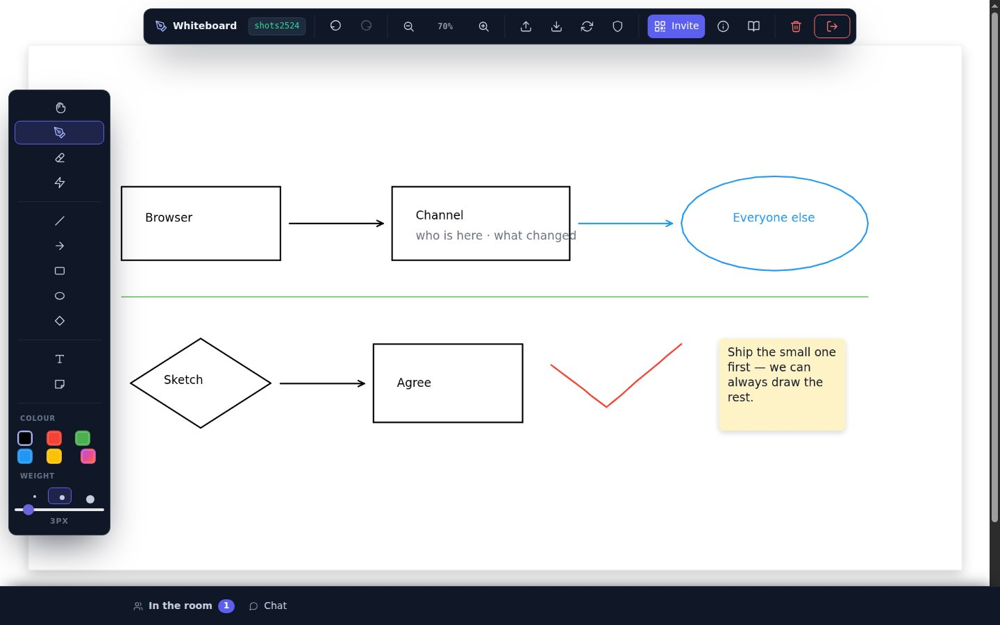
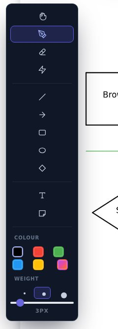
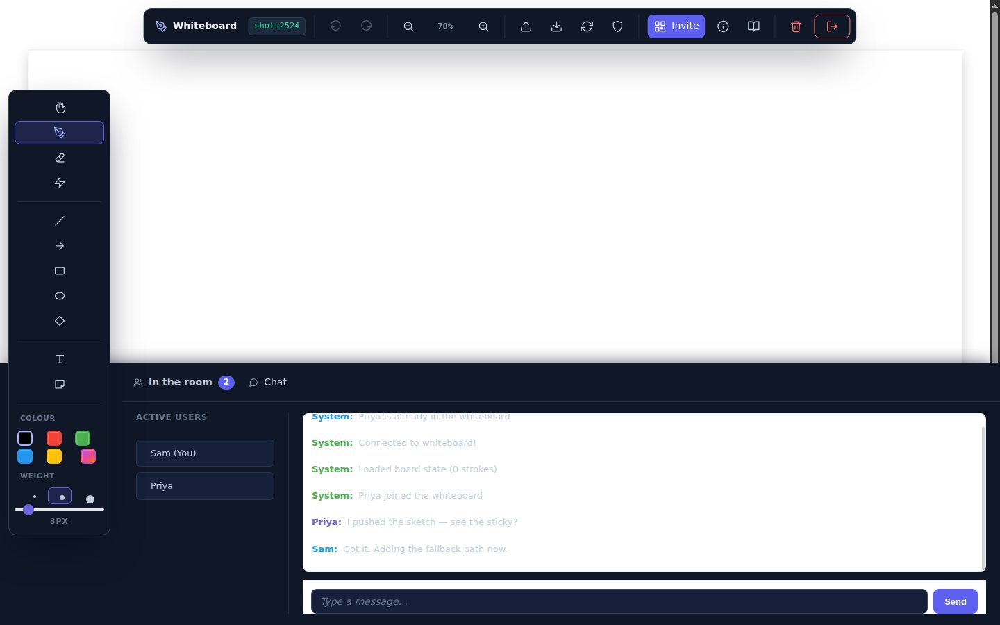
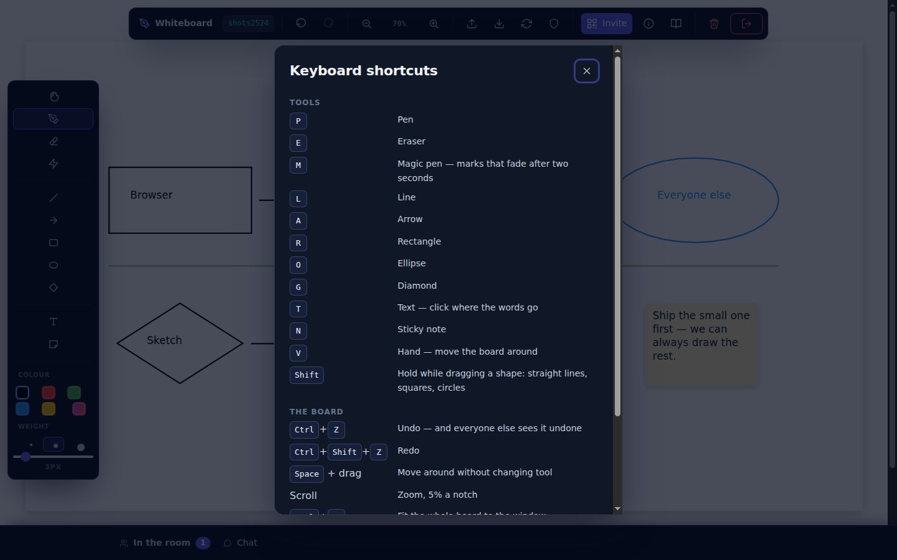

One sheet of paper. Everybody drawing on it at once.
A pen, five shapes, text and sticky notes on a shared board — and every segment you draw goes out the moment your hand moves it, thirty-six bytes at a time, straight to the other browsers rather than through a server. Undo takes back your last thing and takes it back on everyone's screen. Come back tomorrow, same room name, and the board is where you left it.
Nothing to install Works on a phone The board persists

Everything in this picture was drawn with the rail on the left — boxes, arrows, the ellipse, the text inside them, and the note. Tool by tool →
A rail down the left, the way a drawing app has always done it
Tools first, then the colour, then the weight. The board's own actions — undo, zoom, import, export, invite — live along the top, with the two that cannot be taken back fenced off at the end of the bar.

Freehand, smoothed into curves as you draw and again as it arrives on the other side, so a fast line does not come out as a row of straight bits.
Line, arrow, rectangle, ellipse and diamond. Drag one out and it previews on its own layer until you let go — and the room watches it happen, dashed and faint, rather than waiting for a rectangle to appear from nowhere. Hold Shift for a straight line, a square or a circle.
Shapes are made of ordinary segments, which is why they sync, save, export and undo on exactly the same machinery as the pen — but they arrive as the corners you drew, not smoothed into curves the way freehand is.
Click where the words go and type. The box sits where the text will land and is the size the text will be, so what you type is what you get.
A note in paper the colour of the pen you are holding, with the text wrapped inside it. Everyone gets it the moment you finish typing.
Marks that live for two seconds and fade over half a second more. For pointing at things without leaving anything behind — and they fade on everyone's screen, not just yours.
White paint on white paper. It is honest about that: exports come out on a white background so an eraser mark never turns into a white smear over whatever you paste the picture onto.
Move the board. You rarely need it: hold Space and drag from any tool, or drag on the grey outside the paper and the board hands you the hand tool and takes it back when you return.
Five colours, a sixth swatch that opens the system colour picker, and three weights — with the slider still there for anyone who wants a number.
Not turn by turn. At the same time.
Each segment leaves the moment your hand makes it — simplified first, then packed into nine numbers and pushed down a data channel tuned for latency rather than delivery order. The other side drains up to two thousand of them a frame and smooths them back into curves.
- Everyone's pointer is on your board as a coloured dot with their name on it, glided rather than teleported.
- A person's colour comes from their name, so they are the same colour on every screen in the room.
- Chat is in the drawer along the bottom, with an unread count on the bar while it is shut.
- One finger draws, two fingers pinch and pan — the QR code in Invite is there so you can carry on from a phone.

In the app: the bar at the bottom — In the room / Chat. It counts what you have not read while it is shut.
One gesture, one step back — for the whole room
Ctrl+Z takes back the last thing you did, whether that was a stroke, a shape, a note, an import or a clear, and everyone else's board follows. Ctrl+Shift+Z puts it back. Fifty steps of history — and only ever your own: every stroke carries the action and the person that made it, so undo takes back what you drew even if somebody has drawn since.
It used to be two greyed-out buttons. The whole command stack was written and working, with the buttons nailed shut under a comment promising undo one day, a Ctrl+Z tooltip that no key handler backed, and a Clear dialog that said "undo puts it back". They all mean it now.
Close the tab. Come back. It is still there.
The host writes it down
Anyone arriving gets it back
Or take it with you

Three settings, and one rule that always holds
The shield button in the top bar decides what other people are allowed to do to your copy of the board.
- Everything — the default. Strokes appear as they are drawn and a whole-board push is applied without asking.
- Ask me first — strokes still arrive live, but anything that would replace your board asks before it does.
- Nothing — work alone for a minute. Their cursors still show; your own strokes still go out.
The rule that holds in all three: a whole-board sync that arrives while you are mid-stroke is refused. Nobody gets to overwrite a line you are still drawing.
All of them, and the app has this list too
Press ? on the board.
What it is not. There is no select-and-move: the board is a sheet of paper, so a shape is drawn where it is drawn, and the way to change your mind is Ctrl+Z or the eraser. The paper is a fixed 1920×1080 rather than an infinite canvas — which is what makes the same drawing land in the same place on a phone and on a desktop.
Open it, press Invite, and send the link. Whoever opens it is drawing on the same board seconds later. Free while the SDK is in beta.
Open the whiteboard